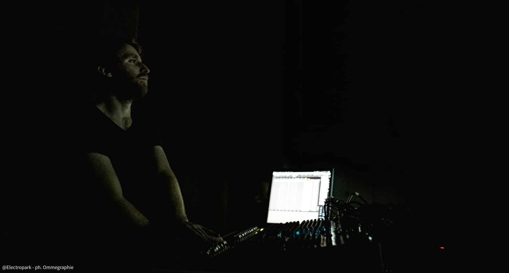

Nato nel torinese nel 1988, Alberto Barberis è attivo come compositore, performer elettroacustico, code-artist e docente di musica elettronica.
Inizia gli studi di chitarra classica in giovane età, ottenendo il Diploma tradizionale e il Diploma accademico di II livello in chitarra classica
presso i Conservatori di Torino e Brescia, con il masismo dei voti. Parallelamente all'impegno strumentale affronta studi di ingegneria presso il
Politecnico di Torino, appassionandosi alle applicazioni matematiche nella composizione musicale, alla musica elettronica e alla computer music.
Studia inoltre composizione con il matematico e compositore Giovanni Albini, laurendosi successivamente con il massimo dei voti al
Master
of Arts in Composition and Theory e al
MAS (Master of Advanced Studies in Music Composition) presso il
Conservatorio della Svizzera Italiana
di Lugano (CH), sotto la guida del M° Nadir Vassena, del M° Giovanni Verrando e di Sylviane Sapir.
Dal 2012 è assistente del Direttore Artistico dell'
highSCORE New Music Center,
ed è parte del collettivo di musicisti legato alla FloatingForest Record,
etichetta discografica di musica improvvisativa e sperimentale.
Per
FloatingForest Recordporta avanti un progetto di improvvisazione elettroacustica con il musicista elettronico Alberto Ricca/
Bienoise:
Alberi.
Recentemente ha lavorato con diversi ensemble di musica contemporanea tra cui l’Ensemble Recherche (DE), l’Eutopia Ensemble (IT),
e ha partecipato a festival internazionali come
Electropark Festival (IT),
OGGIMUSICA (CH),
Nachtstrom (CH),
Afekt (ET),
Teatri di Vetro (IT). Nel 2017 vince la
Werkjahr 2017 della fondazione
Christoph Delz (Basilea - CH).
Parallelamente all’attività artistica si occupa della direzione artistica di
OGGIMUSICA, dell'insegnamento della programmazione e della musica elettronica
presso il
Conservatorio della Svizzera Italiana, dello sviluppo di software musicali e della regia del suono per concerti acusmatici multicanale (EAR)
e per spettacoli di teatro musicale, collaborando con compositori e registi quali Nadir Vassena, Fabrizio Rosso, Matteo Manzitti, Giorgio Battistelli, Carmelo Rifici, Giovanni Verrando.
Nelle sue creazioni combina l'arte digitale, la musica elettronica e la programmazione con una personale tensione biologica.
Elena Rivoltini
arrangiamento vocale, voci
Elena Rivoltini nasce a Varese nel 1994.
Lavora come attrice, cantante, compositrice e performer.
Dopo aver vissuto a Berlino, Londra, Rotterdam e Barcellona, torna in Italia per studiare musica e teatro.
Viene selezionata da Luca Ronconi e ammessa all’Accademia del Piccolo Teatro di Milano, dove si diploma come attrice.
Parallelamente, porta avanti gli studi in canto lirico specializzandosi nel repertorio rinascimentale e barocco.
Studia con Francesca Lombardi Mazzulli e Monica Bacelli.
Realizza delle performance polifoniche elettroacustiche sovrapponendo le parti vocali dei mottetti BWV 225-231 di J.S.Bach.
Approfondisce gli studi di musica sacra con le masterclass del M.
Lorenzo Ghielmi ed entra a fare parte della
Camerata Polifonica di Milano diretta dal M.
Giuseppe Reggiori (repertorio: dal canto gregoriano a Monteverdi, Palestrina, Mozart, Vivaldi, Bach, Pergolesi, Saent-Saëns, Rheinberger).
Come attrice e performer ha lavorato con Bob Wilson in
Odyssey, con Peter Stein nel
Platonov di Čechov,
con Oskaras Koršunovas in
Tre sorelle di Čechov e con Giulia Lazzarini nel
Faust di Goethe.
Studia movimento scenico e fa parte delle compagnia A.M.R. nella produzione di
Choròs,
spettacolo di teatro danza andato in scena al teatro LAC di Lugano, al Piccolo Teatro di Milano e alla Lavanderia a vapore di Torino.
Nel 2019 interpreta Beatrice ne
I Cenci opera in musica di Giorgio Battistelli,
co-protagonista insieme a Roberto Latini. Nel 2020 è Lady Macbeth in
Macbeth - Le cose nascoste,
spettacolo in cui recita e canta dal vivo arie del Seicento inglese di Dowland, Byrd e Purcell.
Ha partecipato alla Biennale Teatro di Venezia 2019 U30 con la rielaborazione elettronica dell’opera
seicentesca
L’Incoronazione di Poppea, attribuita a Claudio Monteverdi, di cui ha curato la regia,
la drammaturgia, gli arrangiamenti e l’esecuzione live di arie e recitativi.
Ha composto le musiche per lo spettacolo
Una vera tragedia, vincitore del Premio Scenario 2019.
Dal 2019 collabora con il compositore e code-artist Alberto Barberis, docente di Musica Elettronica presso
il Conservatorio della Svizzera Italiana. Insieme propongono
Oratorio Virtuale,
un rework elettroacustico e teatrale di un oratorio di Alessandro Stradella (
Electropark Festival - Genova,
Teatri di Vetro - Roma). Parla italiano, inglese, francese, tedesco e spagnolo. Lavora come traduttrice di testi stranieri contemporanei.
Rajan Craveri
algoritmi 3D
Rajan Craveri è specializzato nella creazione di sistemi interattivi per l'arte, e nella generazione di immagini in tempo reale.
Lavora nel campo dello spettacolo dal vivo e delle installazioni multimediali per musei, gallerie d’arte contemporanea e grandi eventi.
Attualmente Rajan Craveri è uno dei più grandi esperti di Jitter (ambiente di programmazione multimediale anche noto con il nome di Max MSP o MAX 8) sia a livello nazionale che internazionale.
Ha insegnato in diverse città’ d’Italia tra cui Milano, Bergamo, Brescia e a Torino.
Ha conseguito la qualifica professionale presso la
Civica Scuola di Teatro Paolo Grassi di Milano e ha approfondito i suoi studi a New York, a Porto e a Bergen.
Nel 2006, insieme alla coreografa Serena Zanconato, fonda
Micron, compagnia che opera tra danza, arti visive e tecnologia.
Collabora costantemente con coreografi, compositori, musicisti, danzatori, registi, poeti, video artisti per la produzione di spettacoli ed installazioni multimediali e interattive.
Ama la collaborazione, l’arte performativa e la natura e in particolar modo il mondo delle api.
Copyright ©2019 Alberto Barberis. All rights reserved.